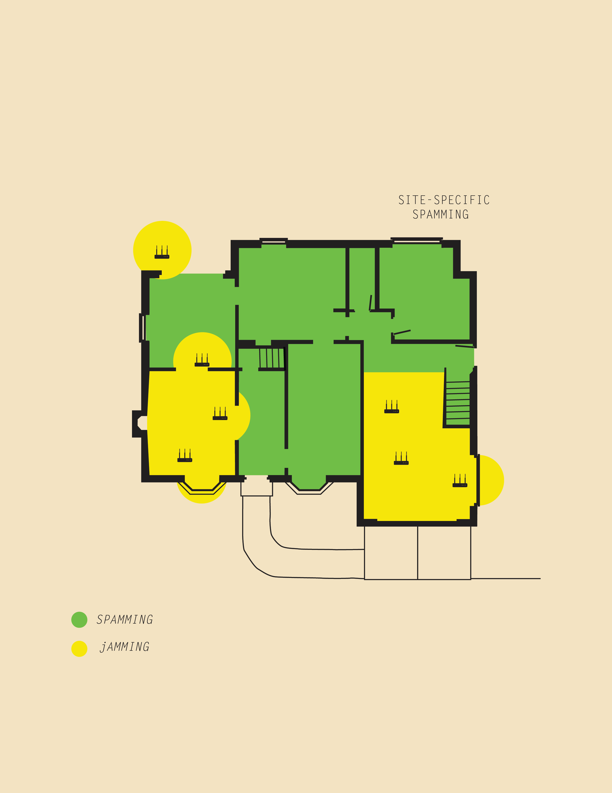

Site specific spamming

This project demonstrates a set of physical and digital components that interfere with network service. The toolkit not only blocks cellular signal at sites of social gathering, but also enables the broadcasting of multimedia messages through a wi-fi hotspot and captive portal.
Mobile phone's isolation method (signal blockage) is made through an emission of elctromagnetism. The electromagnetic signal emitted by the isolator is completely in the range of the mobile phone frequency set by the state. It can only block off the communication of mobile phones. Its effective isolation diameter is of 40 meters.
Wi-fi hotspot operates in a local mesh-network. People joining in will participate on a on-going internvention.
NOTE: civilian use of mobile jamming is illegal in most countries. Audience most be aware of mobile phone's isolation proximity.
site specific spamming feels similar as when you are at the airport. Airports block cellphone carriers and dynamize users to their network. iLand's open Wi-fi hotspot difference, is, that instead of submiting a name and an email, people are actually accesing a space. Space, is a local network, which broadcasts games, or videos, articles, etc.
The toolkit is design to be used in gathering spaces such as lounges, galleries, parties, restaurants, etc, allowing people to explore a new way of communication; a mobile local mesh-network. With the objective of generating a temporary environment with an ambiance that moves away from the reliance of ‘rights’ and ‘laws’, made by the state and recognize the potential emergence for conventions and protocols. Such conventions and protocols evolve rapidly and are effective if the state does not intervene through regulation.